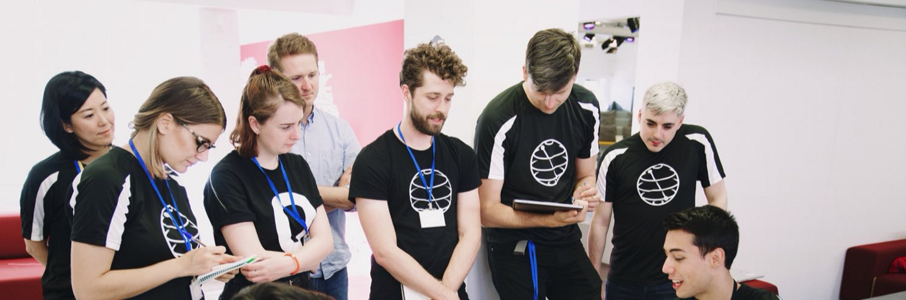
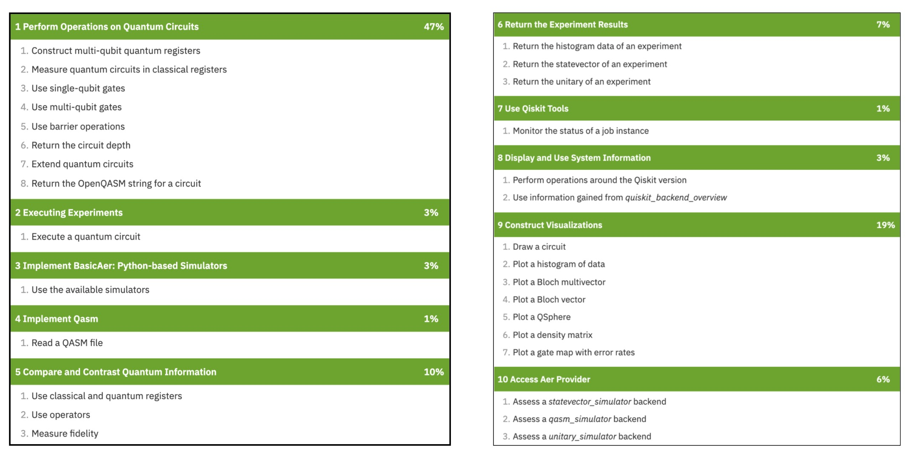

100 Hours Study Plan
Version 1.0 - Updated 13 March 2022
Free exam voucher - https://airtable.com/shrEZlRker8zUukUf
There are 4 phases. Spend about 25 hours on each phase.
Phase 1: Arousing interest
- Sign up for IBM Quantum Lab
- Read sections of “Learn quantum computing: a field guide” (introduction, the qubit, creating superpositions and quantum interference, terms, and operations glossary)
- Watch YouTube: Quantum Computing Club at UIC (Manny Gomez)
- Play with “javafxpert” (James Weaver) exam preparation slides and grok bloch sphere
Phase 2: Meat of material
- Google-fu and play with areas of competencies in the Quantum Lab
- Watch YouTube: 1 Minute Qiskit multiple times
Phase 3: Practice
- Go over workbooks by Bartu Bisgin and Kory Becker, and play with code in the Quantum Lab
Phase 4: Testing
- Take practice assessment exam and review
- Pass final exam
- Celebrate with us!
Further Details
My Background:A recent computer science graduate who has minimal skills in linear algebra/physics and beginner skills in coding. This study plan is for those who don’t have a heavy technical background, yet find quantum computing intriguing (and intimidating!). Passing the exam gave me a basic foundation of quantum computing on which I can build on. This plan is written for a style of learning that relies more on memorization than a deep, intuitive understanding of the sciences.
Phase 1: By play, I mean plugging code into the IBM lab to start familiarizing yourself with the syntax. James Weaver created a very useful visual application called Grok Bloch Sphere to help with understanding qubit manipulation. You’ll probably end up playing with this quite a bit to understand what gates do. Phase 2: As software people, we’re all professional Googlers by now. Again, play with the code as you find it. I prefer this method over passively reading the textbook or tutorial. 1-minute Qiskit gives a little more context and depth to the code that you won’t find in the textbook. It’s also relevant to the exam questions. Phase 3: Korey and Bart did a fantastic job of giving you an overview of the material you need to know. Phase 4:For $30 you can take the practice exam and get an idea of areas you need to work on. I highly recommend it. I missed passing by one percentage and missed a lot of visualization questions that I was overconfident with.
If you pass or could use some help, come check us out at the weekly online meetup.